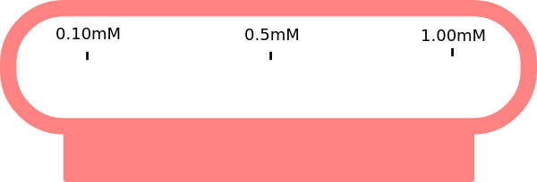
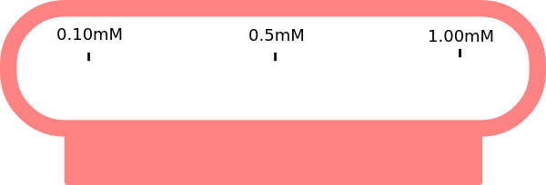

మాన్యువల్
1. పవర్ బటన్ పై క్లిక్ చేసి వాయిద్యం ఆన్ చేసి, వాయిద్యం ప్రారంభించడానికి 30 నిమిషాలు వేచి ఉండండి.
2. పొటాషియం పర్మాంగనేట్ యొక్క తగిన సాంద్రతలు (చెప్పండి, 0.1 mM, 0.5 mM మరియు 1.0 mM) మూడు సజల పరిష్కారాలను సిద్ధం చేయండి. ఈ వర్చువల్ ల్యాబ్ ప్రయోగంలో, కొలత కోసం పరిష్కారాన్ని ఎంచుకోవడానికి ఏకాగ్రత పట్టీపై క్లిక్ చేసి లాగండి. అత్యల్ప ఏకాగ్రత పరిష్కారంతో ప్రారంభించండి. (ఎందుకు?)
3. శుభ్రమైన, పొడి బీకర్ తీసుకోవడానికి బీకర్పై క్లిక్ చేయండి.
4. శుభ్రమైన, పొడి బీకర్లో ద్రావణాన్ని పోయడానికి వాల్యూమెట్రిక్ ఫ్లాస్క్పై క్లిక్ చేయండి.
5. బీకర్ నుండి తగిన పరిమాణంలో ద్రావణాన్ని సేకరించడానికి మైక్రోపిపెట్ పై క్లిక్ చేయండి.
6. దానిపై క్లిక్ చేయడం ద్వారా క్యూట్ తీసుకోండి.
7. మైక్రో పైపెట్ నుండి క్యూవెట్పై క్లిక్ చేయడం ద్వారా ద్రావణాన్ని కువెట్లోకి పోయండి. (నిజమైన కొలతలలో, కువెట్ దాని వాల్యూమ్లో మూడింట రెండు వంతుల వరకు నిండి ఉంటుంది.)
8. తెరవడానికి స్పెక్ట్రోఫోటోమీటర్ మూతపై క్లిక్ చేయండి.
9. నమూనా హోల్డర్లో ఉంచడానికి కువెట్పై క్లిక్ చేయండి. ఈ కొలతలో నీటిని నమూనా ఖాళీగా లేదా సూచనగా ఉపయోగించాలి. ఇక్కడ డబుల్ బీమ్ స్పెక్ట్రోఫోటోమీటర్ చూపబడింది. ఈ సందర్భంలో, నమూనా నమూనాను నమూనా హోల్డర్లో మరియు నమూనా బ్యాంక్ లేదా రిఫరెన్స్ను ఒకేసారి రిఫరెన్స్ హోల్డర్లో ఉంచవచ్చు.
10. కంప్యూటర్ మానిటర్పై క్లిక్ చేసి, ఆపై స్కాన్ బటన్పై క్లిక్ చేసి తరంగదైర్ఘ్యం స్కాన్ను అమలు చేయండి మరియు తరంగదైర్ఘ్యం స్కాన్ను గమనించండి. నిజమైన స్పెక్ట్రోఫోటోమీటర్ ఆపరేషన్లో, నమూనా కోసం తగిన తరంగదైర్ఘ్యం సంఘటన కాంతిని ఎంచుకోవచ్చు మరియు తరంగదైర్ఘ్యం స్కాన్ను కంప్యూటర్ సాఫ్ట్వేర్ ద్వారా అమలు చేస్తారు. ఒకరు స్కాన్ను శోషణ లేదా ట్రాన్స్మిటెన్స్ మోడ్లో అమలు చేయవచ్చు. స్కాన్ డేటా కంప్యూటర్ పేరుతో ఫైల్ పేరుతో నిల్వ చేయబడుతుంది. స్పెక్ట్రోఫోటోమీటర్ ఒకే పుంజం పరికరం అయితే, మొదట నమూనా ఖాళీ లేదా సూచన ఒక కువెట్లో తీసుకోబడుతుంది మరియు తరంగదైర్ఘ్యం స్కాన్ నమూనా తరువాత నడుస్తుంది. సంబంధిత తరంగదైర్ఘ్యాల కోసం నమూనా డేటా నుండి సూచన డేటాను తీసివేయాలి.
కొత్త కొలత ప్రారంభించడానికి రీసెట్ బటన్ పై 11.Click.
12. తదుపరి అధిక ఏకాగ్రతతో కొలతను పునరావృతం చేయండి.
13. డేటా టాబ్పై క్లిక్ చేయడం ద్వారా మొత్తం డేటాను సేకరించండి.
వివిధ సాంద్రతల కోసం వివిధ తరంగదైర్ఘ్యాల వద్ద నమూనా యొక్క శోషణ డేటాను ప్లాట్ చేయండి మరియు గరిష్ట శోషణల తరంగదైర్ఘ్యాన్ని నిర్ణయించండి, అనగా స్పెక్ట్రల్ పీక్-పొజిషన్స్.
15. ఒక నిర్దిష్ట తరంగదైర్ఘ్యం (చెప్పండి, 525 ఎన్ఎమ్) వర్సెస్ ఏకాగ్రత కోసం శోషణ విలువలను ప్లాట్ చేయండి మరియు లీనియర్ రిగ్రెషన్ను లెక్కించండి.
16. 545 nm మరియు 570 nm అనే రెండు ఇతర తరంగదైర్ఘ్యాల కోసం శోషణ విలువలు వర్సెస్ ఏకాగ్రత యొక్క ప్లాటింగ్ పునరావృతం చేయండి మరియు సరళ రిగ్రెషన్లను లెక్కించండి.
పైన పేర్కొన్న మూడు తరంగదైర్ఘ్యాల కోసం ఏకాగ్రత వర్సెస్ ఏకాగ్రత విలువల స్థానంలో ట్రాన్స్మిటెన్స్ తీసుకునే ఇలాంటి మూడు ప్లాట్లను నిర్మించండి మరియు సరళ రిగ్రెషన్లను లెక్కించండి.
శోషణ మరియు ప్రసార విలువలు ఏకాగ్రతతో సరళ సంబంధం కలిగి ఉన్నాయా లేదా అనే విషయాన్ని గమనించి బీర్ చట్టాన్ని ధృవీకరించండి.
ఇచ్చిన తరంగదైర్ఘ్యం కోసం సంబంధిత ఏకాగ్రత ద్వారా శోషణ డేటాను విభజించడం ద్వారా శోషణ కొలతలను 1 mM గా ration తకు సాధారణీకరించండి. ఇచ్చిన తరంగదైర్ఘ్యం వద్ద సాధారణీకరించిన డేటా (ప్రయోగాత్మక లోపం లోపల) ఏకాగ్రత -ప్రత్యేకంగా ఉందా? మీ ఫలితాలను చర్చించండి.
 
